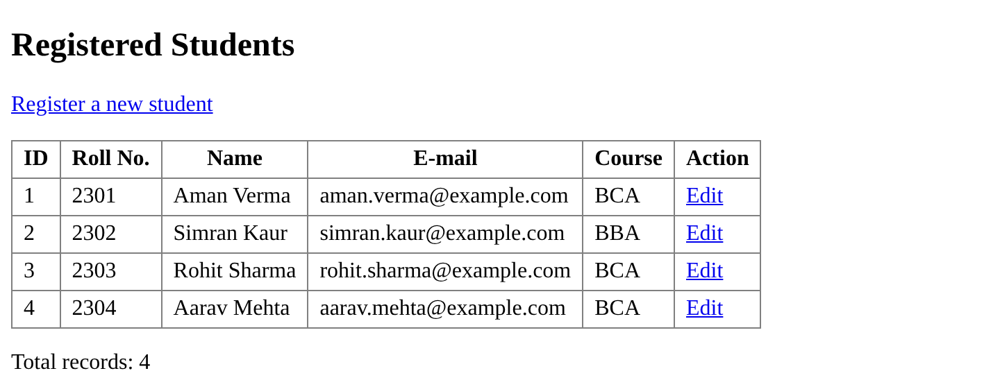

Fetch and display all records from a database table in an HTML table.
Program 8.6: Fetching and Displaying Database Records in an HTML Table
Concepts used
SELECT ... ORDER BY, mysqli_query(), mysqli_num_rows(), mysqli_fetch_assoc() in a while loop, HTML table, htmlspecialchars(), alternative syntax.
Test data: The four records in the table after Program 8.5: three sample records and the registration of Aarav Mehta.
Logic
- Select all records ordered by ID and count them.
- If there are no records, display "No records found." with a link to the registration page.
- Otherwise, display a table with a heading row and one row for each record, each value escaped, and an Edit link in the last cell.
- Display the total number of records, free the result and close the connection.
Code
db.php opens the database connection and is shared by all database pages (Section 8.5.6).
<?phprequire "db.php"; $result = mysqli_query($conn, "SELECT id, roll_no, name, email, course FROM students ORDER BY id");$count = mysqli_num_rows($result);?><!DOCTYPE html><html lang="en"><head> <meta charset="UTF-8"> <title>Registered Students</title> <style> table, th, td { border: 1px solid gray; border-collapse: collapse; } th, td { padding: 4px 8px; } </style></head><body> <h2>Registered Students</h2> <p><a href="register.php">Register a new student</a></p> <?php if ($count == 0): ?> <p>No records found.</p> <?php else: ?> <table> <tr> <th>ID</th><th>Roll No.</th><th>Name</th> <th>E-mail</th><th>Course</th><th>Action</th> </tr> <?php while ($row = mysqli_fetch_assoc($result)): ?> <tr> <td><?php echo $row["id"]; ?></td> <td><?php echo htmlspecialchars($row["roll_no"]); ?></td> <td><?php echo htmlspecialchars($row["name"]); ?></td> <td><?php echo htmlspecialchars($row["email"]); ?></td> <td><?php echo htmlspecialchars($row["course"]); ?></td> <td><a href="edit.php?id=<?php echo $row["id"]; ?>">Edit</a></td> </tr> <?php endwhile; ?> </table> <p>Total records: <?php echo $count; ?></p> <?php endif; ?></body></html> <?phpmysqli_free_result($result);mysqli_close($conn);?>
<?php// db.php - opens the database connection used by every database pagemysqli_report(MYSQLI_REPORT_OFF); // functions return false on failure $conn = mysqli_connect("localhost", "root", "", "college_db"); if ($conn === false) { // A simple message for the user; no connection details are shown exit("Sorry, the student database is not available at the moment.");} mysqli_set_charset($conn, "utf8mb4");
Output
These are real screenshots, taken by running the program with the test data.

Understanding the output
Each of the four database records appears as one table row, in the order of the IDs, and the count below the table agrees with the number of rows. The fourth row is the record inserted through the registration form, which shows that the form and the list work on the same table. The output is a sample, because the rows displayed depend on the records present in the database when the page is opened. If all records are removed, the page shows only "No records found." below the link.
How it works
Selecting and counting: The connection file is loaded, the SELECT statement retrieves the five columns of all records in the order of their IDs, and mysqli_num_rows() counts the rows. The style rules only draw the borders and spacing of the table.
Building the table: If the count is 0, only the message is displayed. Otherwise, the heading row is written once, and the while loop, written with the alternative syntax while (...): and endwhile;, fetches one record at a time and writes one <tr> with six cells. Every text value is passed through htmlspecialchars(); the id is a number generated by the database, so it is printed directly. The Edit link of each row carries that row's id. After the table, the total is displayed, and the final PHP block frees the result set and closes the connection.
Run it yourself
college_db database (see Setup).Running it in XAMPP
Save the file in C:\xampp\htdocs\phpbook\ch08 and open http://localhost/phpbook/ch08/list.php, or click View registered students on the registration page.
Common mistakes
- Writing the heading row inside the loop, so that the headings are repeated above every record.
- Omitting
htmlspecialchars()because the values come from the database, which allows stored HTML to change the page. - Forgetting the empty-result check, so that an empty table with only headings appears.
- Writing
$row["Email"]when the selected column is email, which gives an Undefined array key warning.
Viva questions
Which function fetches one row as an associative array?
mysqli_fetch_assoc($result). It returns null when there are no more rows.How do you find the number of rows in a result?
mysqli_num_rows($result).